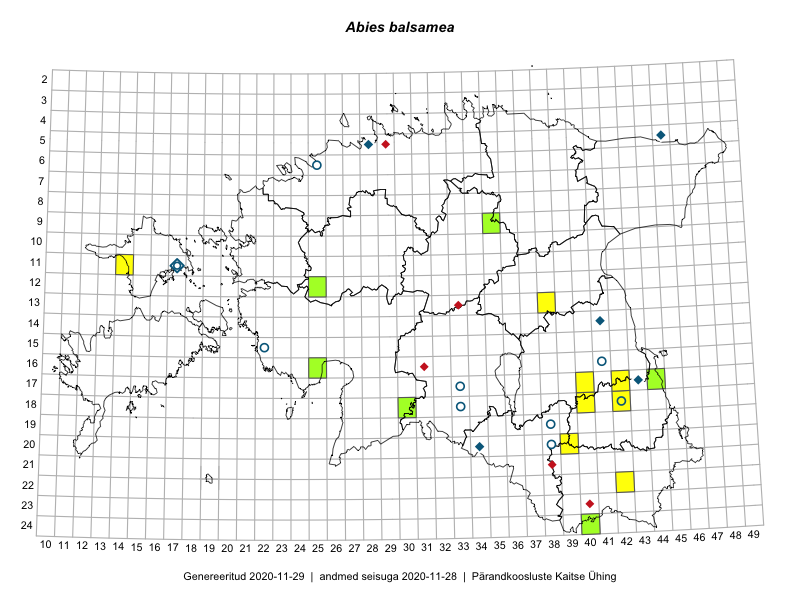

Abies balsamea
Uuendatud: 2016-12-07
Kaardile koondatud taksonid: Abies balsamea (L.) Mill.

Kaart põhineb 10 vaatlusel. Taime on leitud 6 ruudust.
| Ruut | Vaatleja(d) | Vaatlusaeg | Kirje tüüp | Viide andmebaasikirjele |
|---|---|---|---|---|
| Malle Leht | 2015-07-28 | ruut/ala | vaata PlutoFis | |
| 18-40 | Malle Leht | 2015-05-12 | ruut/ala | vaata PlutoFis |
| 13-38 | Eeva-Maria Jeletsky, Tarmo Niitla | 2015-05-16 | ruut/ala | vaata PlutoFis |
| 13-38 | Eeva-Maria Jeletsky, Tarmo Niitla | 2015-05-16 | punkt | vaata PlutoFis |
| 11-14 | Eeva-Maria Jeletsky, Tarmo Niitla | 2015-06-28 | punkt | vaata PlutoFis |
| 11-14 | Eeva-Maria Jeletsky, Tarmo Niitla | 2015-06-28 | ruut/ala | vaata PlutoFis |
| 24-40 | Eeva-Maria Jeletsky, Tarmo Niitla | 2015-07-25 | ruut/ala | vaata PlutoFis |
| 17-42 | Kirsi Loide, Marje Loide | 2015-04-29T07:00Z | ruut/ala | vaata PlutoFis |
| 18-42 | Kirsi Loide, Marje Loide | 2015-04-30T07:00Z | ruut/ala | vaata PlutoFis |
| 17-42 | Kirsi Loide, Marje Loide | 2015-07-27 | ruut/ala | vaata PlutoFis |